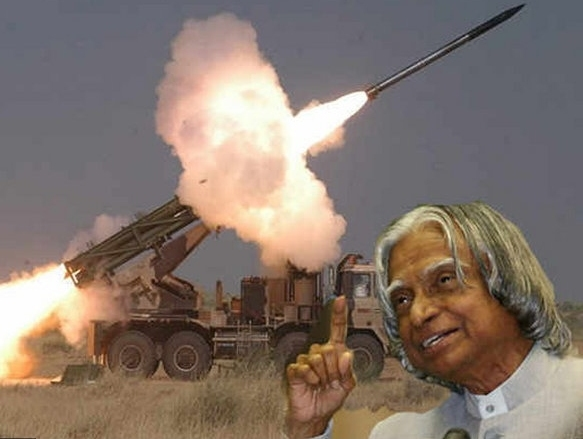
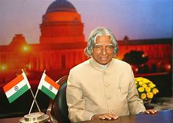
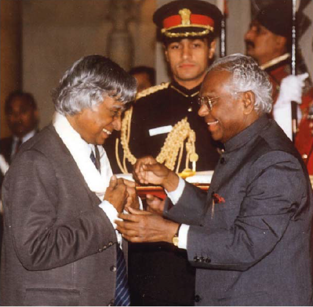
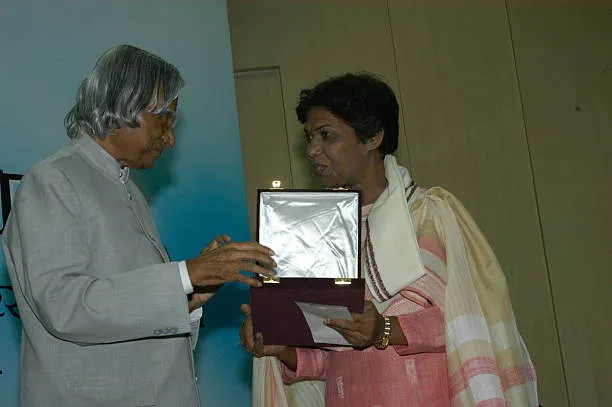
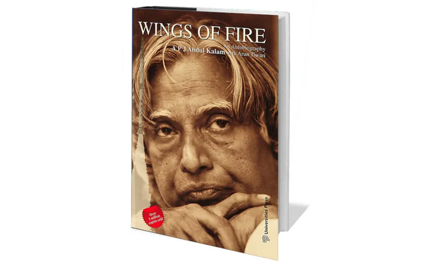
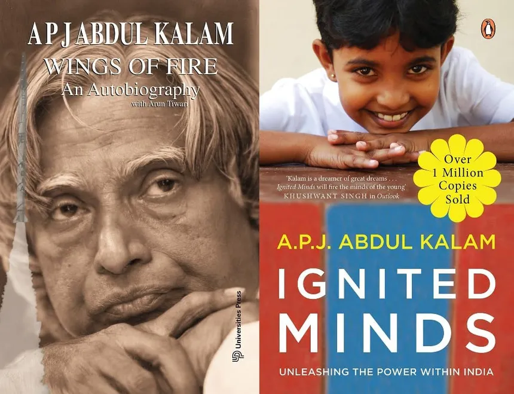
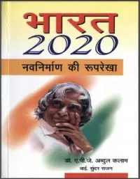
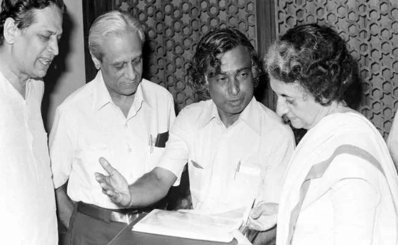
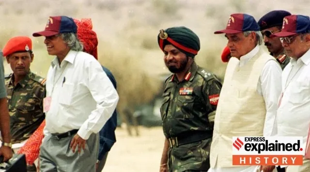

About
Dr. Avul Pakir Jainulabdeen Abdul Kalam (15 October 1931 – 27 July 2015) was an Indian aerospace scientist and the 11th President of India. He played a leading role in the development of India's missile and nuclear weapons programs. Known as the "Missile Man of India," he was also a beloved teacher and an inspiration to millions.
Dr. Kalam's career started in the Indian Space Research Organisation (ISRO), where he was a key figure in the country's space program. Later, he moved to the Defence Research and Development Organisation (DRDO), where he developed India's ballistic missile systems. He served as President of India from 2002 to 2007, during which time he continued to inspire and mentor young people.
To learn more about Dr. A.P.J. Abdul Kalam, see his page at Wikipedia

Achievements
Missile Development
Dr. Kalam played a pivotal role in developing India's missile programs, including the Agni and Prithvi missiles.
ISRO Contributions

Dr. Kalam was a key figure in India's space program, particularly in developing the SLV-III, the satellite launch vehicle that successfully deployed the Rohini satellite in near-Earth orbit in 1980.
Presidency
Dr. Kalam served as the 11th President of India from 2002 to 2007, during which he was known as the "People's President" and was admired for his humility and vision for the nation.
Honors and Awards
Bharat Ratna
India's highest civilian award, received in 1997 for his contributions to science and technology.
Padma Vibhushan
India's second-highest civilian award, received in 1990 for his outstanding contributions.
Padma Bhushan

India's third-highest civilian award, received in 1981 for his exceptional service to the nation.
Books and Publications
Wings of Fire
An autobiography that became a bestseller, inspiring countless readers.
Ignited Minds
A book encouraging young Indians to dream big and work hard to achieve their goals.
India 2020
Co-authored with Y.S. Rajan, outlining a vision for India's development.
Research and Development
Missile Development
Dr. Kalam played a pivotal role in developing India's missile programs, including the Agni and Prithvi missiles.
SLV-III
He was the Project Director for SLV-III, which successfully deployed the Rohini satellite into orbit in 1980.
Pokhran-II
He played a crucial role in India's nuclear tests in 1998, establishing India as a nuclear power.